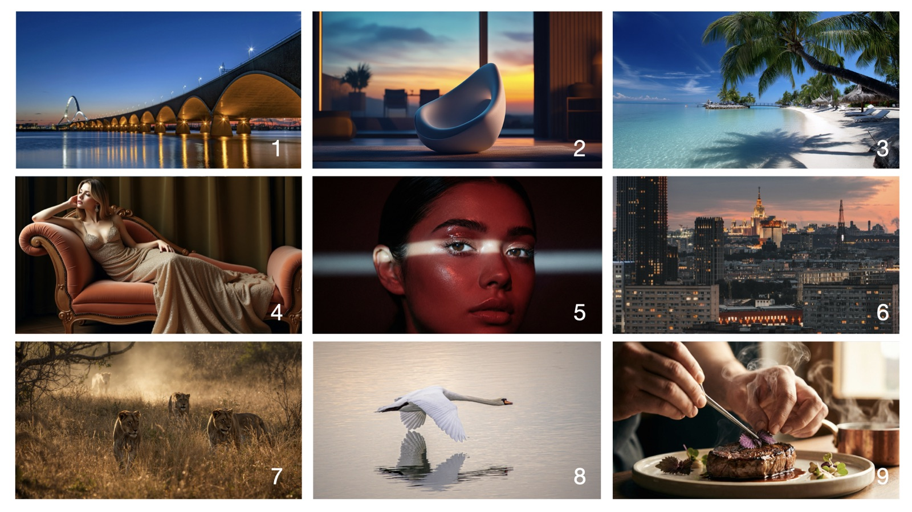

Circle the numbers you think are AI-made.

| Our two clues |
|---|
Cut out the cards.
Is the message really from your parent?
Put each card where it belongs.
Easy to fake
Takes some work
Hard to fake
Write three steps, in order.
A voice message that sounds like your mum or dad: "I lost my phone. Send me the code you just got by text."
| Our three steps, in order |
|---|
Cut or tear along the dashed lines.
You get a message that sounds like someone you know. What makes it real enough to trust, and what would you check?
Name:
You get a message that sounds like someone you know. What makes it real enough to trust, and what would you check?
Name: